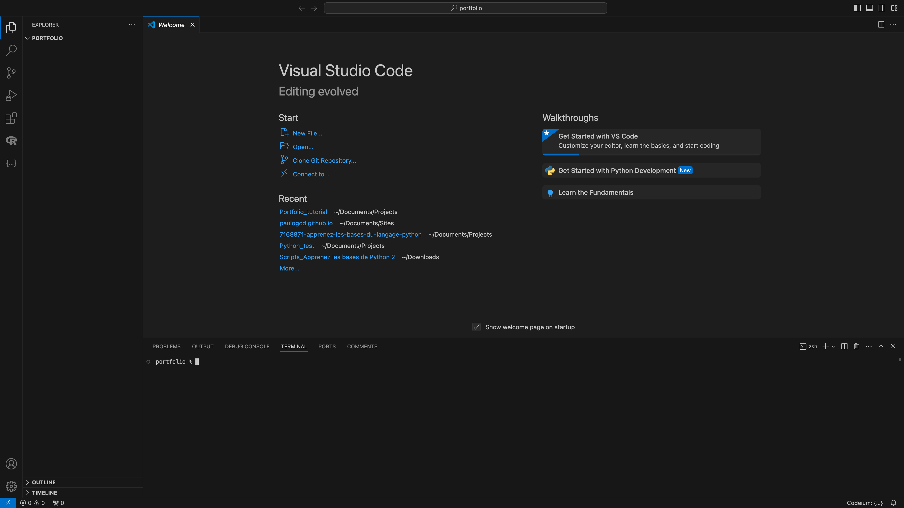

1. Introduction to Git and GitHub
Summary
- In this first session, you will learn the basics on how to use Git and GitHub on Visual Studio Code.
- You can find the slides of this session here.
Introduction
This tutorial aims to give you the tools to easily and efficiently create, manage and publish your own online portfolio. In order to do that, we use several tools, such as Visual Studio Code, Git, GitHub, and Quarto. To understand why we use them, it is important to understand what Internet is. Internet can be understood as a network of computers that can communicate with each other. In the same way, a website can be understood as content that can be accessed over the internet. Thus, this tutorial will first focus on the design of the website, and then on the publication of the website.
Usually, one shoul learn HTML5 and CSS to know a bit of Web development. However, in the recent years, a lot of static website generator have emerged, that make the conception of websites easier. Among the several static website generator, Jekyll, Zola, Hugo, and Quarto can be cited, but they are far from being the only ones. This tutorial focuses on Quarto in the second session.
After having designed your website with a static website generator, we finally have to make it available to the world, i.e. publish it. Several free hosting services exist, such as Netlify, Quarto Pub, and GitHub Pages, among other ones. This tutorial focuses on GitHub Pages in the third session.
Now, in order to make the whole process easier and fluid, this tutorial first focuses on the establishment of a workflow using Visual Studio Code, Git and GitHub. This workflow allows to make the second and third steps easier, and is also very useful if you are to work in collaborative projects in the future. This is thus the first session of this tutorial.
The first session is longer than the other two, so once you are done with it, the rest will be a lot easier.
Visual Studio Code
Visual Studio Code (VSC or vscode) is a software to write code, also called Integrated Development Environment (IDE). It is largely used, and a lot of extensions exist to customize your experience with it. We are thus going to install vscode here.

The strength of vscode comes mainly from the way it manages folders, in which several files of the same project exist. Now, we are going to create a folder, named “portfolio” for example, in which we are going to develop our online portfolio.
After it is done, we can use vscode to open this same folder. To do so, we open vscode, click on “open” in the starting page, and select your folder.

Now that you selected your folder, vscode opened it and you should have something like that :

NOTE : When you open a folder for the first time, vscode may ask you “Do you trust the authors of the files in this folder?”. Since you just created your folder and that it is empty, you can naturally click on yes. You are the author !
It’s done ! We settled vscode correctly for the next step : initializing git in vscode.
Basics of Git
Git is a software that allows for version management, i.e. it is a version control system. Simply put, it is a software that allows you to make a logbook of all the changes in your files. You want to check all the steps from the very beginning of your project until the current version ? If you use git, it is possible.
Note that this does not only work with code files, but also with any type of file. If you have a text file (like a Master thesis for example…) for which you want to control the different versions, you can use git for it !
The first step is to install Git from here.

Once it is done, you can go back to vscode and go the research bar at the top and enter “>Terminal: Create New Terminal”. This will pop-up a terminal console in vscode.

This should normally generate a console at the bottom of vscode, where your username and/or the name of your computer appear :

Simply put, the terminal allows to textually communicate with your machine, instead of graphically, like it is usually the case. Having a terminal opened in vscode makes it possible to manipulate the current opened folder more easily. This is also how we are going to use Git.
Note : This tutorial does not focus on what a terminal is, what shell, bash or any kind of line command are and do. However, it would be very useful for you to know how to use the basics of it. I strongly encourage you to check some material on it, such as the first four sessions of Florian Oswald lecture on the shell.
Now, to use Git, we need to take a step back.
First, we have to initialise git in a folder. This will create a .git folder in our current folder, that will be the logbook. Second, we have to choose which files we track with git. The changes of the tracked files will be registered in the .git folder. We can now work on our files. Once we want to save the changes of the files, we ‘add’ the modified files to the logbook. Third, we have to describe the changes. Without descriptions, the changes won’t be saved in the logbook. To describe the changes, we write a ‘commit’ in the logbook.
Concretely, if we come back to vscode :
- We write
git initin the terminal console to initialise a git folder. - We then click on “new file” on vscode, for example a text-file. We write something in it, and save it as
text.txt. - We begin tracking this file with git, using
git add text.txt. - We describe our action using
git commit -m "Adding a text file.".
At this point, you should have something like that :

At any point, we can use some other git commands to have more information. For example :
git statusinforms us about which files in our folder are being tracked, and what modifications are not yet registered.git loggives back the logbook, i.e. the list of changes that were saved.git diffgives the differences between the current version of your files and the latest version saved in the logbook.
Git is a very powerful tool that allows to do a lot of collabortive code managing, but we choose here to mainly exploit one of its features : remote synchronization. In addition to having this local logbook on your computer, you can indeed also send your files to a remote server, in a similar way than the cloud or a remote drive. This is where GitHub enters into play.
Basics of GitHub
GitHub is a firm (currently owned by Microsoft) that puts at disposition servers which you can use to store your data. It has a lot of different uses, including collaborative coding, but this tutorial only focuses on how to use it to manage your project with Git and Quarto. It is widely used in the programming community and is also sometimes referred as the social network of developers.
To use GitHub, the first step is to go to GitHub and create an account.

Once your account is created, you can create a repository, named “username.github.io”, replacing “username” with your actual user name. For example, if your username is “janesmith”, then you should create a repository named “janesmith.github.io”.
Once it is done, we can go back to vscode, to add a connection between our local folder and the remote repository we just created.
In order to do that, we first have to configurate git.
Enter
git config --global user.name "Your Name", replacing “Your Name” with the name of your choice. It doesn’t have to be the same as your GitHub user name.Enter
git config --global user.email "your@mail.com", replacing “your@mail.com” with the email of your choice. Note that it does not require you to actually own this email adress.Then, we have to add a ssh key to our GitHub account. An ssh key allows you to communicate to GitHub from your computer. Enter
ssh-keygen -t ed25519 -C "your@email.com", replacing “your@email” with your actual email. Your terminal will ask for a passphrase, you can not enter anything, to choose to not have any passphrase.Now, we are going to use this key to establish a connection with GitHub. On your terminal, you can enter
cat ~/.ssh/id_ed25519.puboropen ~/.ssh/id_ed25519.pub, and it will give you back a character string beginning with “ssh-ed22519”. Go to your GitHub account, Click on your profile picture at the top right of the website, choose “settings”, then click on “ssh and gpg keys”, then on “add new ssh key”, choose the title you want (for example the name of your current computer), and in “key”, add the value your terminal gave back to you. You should be connected !Now that your GitHub account is connected to your computer, we have to connect your local folder to a repository. Go on your repository, click on the green menu button “code”, and copy the text it gives you in the SSH section (it should be something like “git@github.com:username/name_of_the_repository.git”). In your vscode terminal, with your folder open, you can then enter :
git remote add origin git@github.com:username/name_of_the_repository.git. The connection between your local folder and the distant repository should be established.We can “push” the content of our local folder to our remote folder. This is a command that we use once all the changes are commited in our logbook to send all the information in the remote server. To be able to push correctly, you first enter
git push -u origin main, and then you can just entergit pushfor the next times, when your changes are added and commited.
Note : You can also initialise a git folder in another directory, and “clone” an existing GitHub repository. This will create a duplicate of this repository in your file and on your GitHub account, or just load the data locally if it is one of your repositories.
Use Git and GitHub together
Now that the connection between your local folder and your distant repository has been created, you can add modifications to your folder (like creating a new file), add those changes via git add followed by the name of your new document (you can also use * to select everything in your folder), commit those changes via git commit -m "the description of your changes", and then push those changes via git push. This add-commit-push process is one of the basics to synchronize your local folder with the files of your GitHub account.